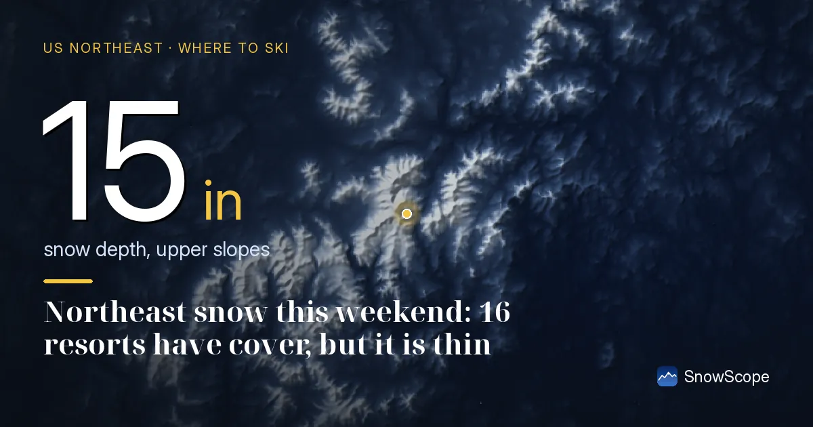
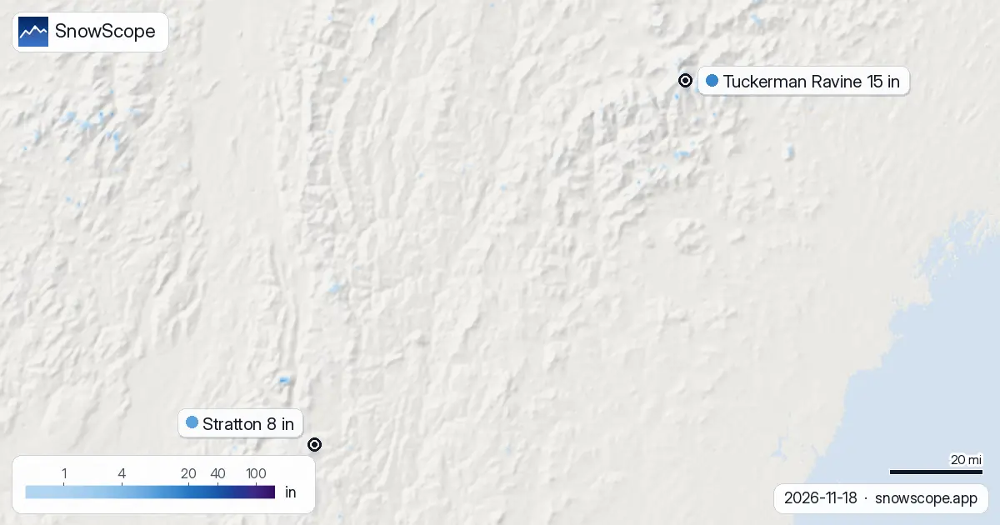
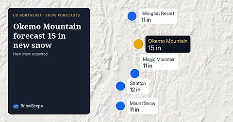

Northeast snow this weekend: 16 resorts have cover, but it is thin
Should you ski the Northeast this weekend? Only if you head to the highest terrain at the few resorts with snow. Sixteen resorts have measurable cover today, but depths are thin and no new snow is forecast for the next three days.
See the live snow forecast for Tuckerman Ravine in the SnowScope appSnow depth, powder alerts and the 3D map, free.
Where the snow is
Tuckerman Ravine holds the most snow in the region at 38 cm (15 in) on upper slopes, measured on 17 November by satellite. Stratton has 20 cm (8 in) at the top. These two resorts stand apart; most of the region is bare or nearly bare.
The map shows snow cover across just 670 square kilometres of the Northeast today, down from 6410 square kilometres two days ago. That sharp drop reflects warm air and sparse early-season conditions. By Saturday, our model suggests cover will shrink to around 90 square kilometres across only four resorts.
| Resort | Snow depth | New snow, 72 h | Coming, next days | Top |
|---|---|---|---|---|
| Tuckerman Ravine | 15 in (38 cm) | 0 in (0 cm) | 0 in (0 cm) | – |
| Stratton | 8 in (20 cm) | 0 in (0 cm) | 0 in (0 cm) | 3,881 ft (1,183 m) |

What to expect at altitude
At Stratton, the summit sits at 1183 m (3881 ft) where the freezing level tonight reaches 3290–3610 m (10,800–11,850 ft). This means your best chance is high terrain. The top has 2 cm (1 in) of modelled snow; the mid-mountain (895 m) has zero; the base is bare.
Tuckerman Ravine's upper slopes fare better, but remember that satellite sees snow presence, not skiable depth. Rocks and bumps may still show through thin cover, especially on south-facing slopes where any warmth melts the base.
What is not coming
No fresh snow is forecast through Saturday. The next seven days bring zero new centimetres to both Tuckerman Ravine and Stratton. With high freezing levels and no precipitation in the forecast, any existing snow will only shrink or firm up as temperatures drop at night and rise during the day.
How to ski safely now
Early-season snow is fragile. Stay on groomed and patrolled runs where the resort keeps snow stable. Avoid off-piste terrain until snow depth and stability improve. If you do venture off-piste, read the official avalanche bulletin for the region before you go.
Wear bright layers and check the resort website before you drive. With only four resorts forecast to hold snow by Saturday, lifts may not open everywhere, and runs may be limited. Confirm conditions and opening status directly with the resort.
Tips for skiers
- Drive to the highest resorts—Tuckerman Ravine and Stratton—if you want to ski this weekend; lower resorts are bare.
- Ski north-facing slopes and summit terrain where snow lasts longest as temperatures swing between day and night.
- Avoid off-piste runs until snow depth increases; check the official avalanche bulletin if you go into the backcountry.
- Confirm lift openings on the resort website before you leave home; sparse snow may limit operations.
- Stay on groomed pistes where the resort manages snow for safety; thin early-season cover hides rocks and uneven ground.
About these numbers
Resort snow depths are the deepest snow on the resort's upper slopes from the SnowScope snow model (about 1 km, run of 18 November); they are estimates for an area, not a measurement at one point. Station values are measurements on the date shown. Forecasts can change. Always read the official avalanche bulletin before going off-piste.
Official avalanche bulletins: Mount Washington Avalanche Center
Cite this report
For research, teaching or the press: the numbers and charts are free to reuse under CC BY 4.0 with this citation.
SnowScope (2026), Northeast snow this weekend: 16 resorts have cover, but it is thin, https://snowscope.app/blog/en/2026/11/us-northeast-where-to-ski-this-weekend-18-november-2026.html, accessed 2026-11-18
SnowScope (Atlas Labs). (2026, November 18). Northeast snow this weekend: 16 resorts have cover, but it is thin. SnowScope snow reports. https://snowscope.app/blog/en/2026/11/us-northeast-where-to-ski-this-weekend-18-november-2026.html
BibTeX
@misc{snowscope2026usnortheastwheretoskithi,
author = {{SnowScope (Atlas Labs)}},
title = {Northeast snow this weekend: 16 resorts have cover, but it is thin},
year = {2026},
month = nov,
howpublished = {\url{https://snowscope.app/blog/en/2026/11/us-northeast-where-to-ski-this-weekend-18-november-2026.html}},
note = {Published 2026-11-18 19:57 UTC; accessed 2026-11-18}
}· CC BY 4.0 · Methods, data and tools →
Tuckerman Ravine: snow and temperature by height, this winter vs last (tools) →
Follow Tuckerman Ravine
Free: a message when fresh snow is coming, and the forecast every morning.
More snow reports

Okemo Mountain will get 15 in (38 cm) of new snow by November 14, with 11 in (29 cm) on November 13, our snow model from November 11 shows.

Northeast forecast made 10 November: 10 in (25 cm) of new snow arriving through 13 November will transform snow cover from 1 resort to 62.

A practical kit list for Stowe, Vermont: layers, face cover, goggles, sharp edges and hand warmers, tied to the snow of 46 past winters on Mount Mansfield.